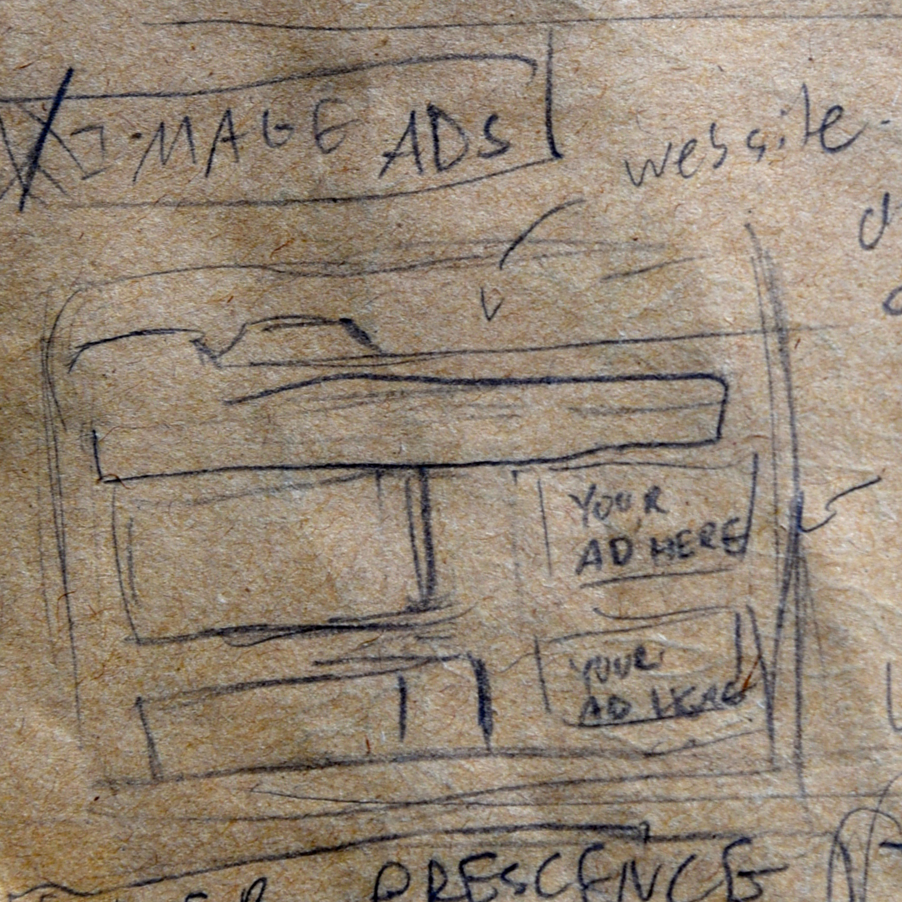
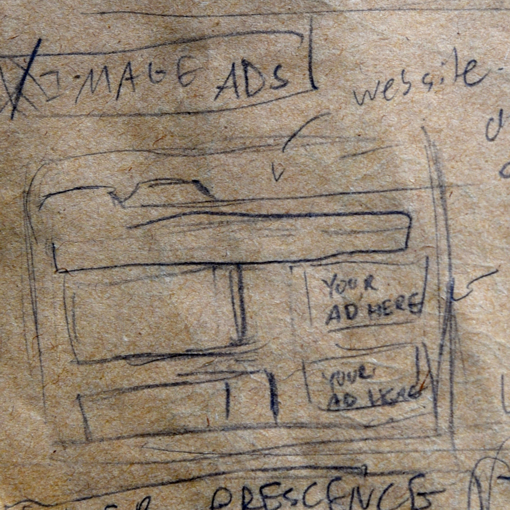
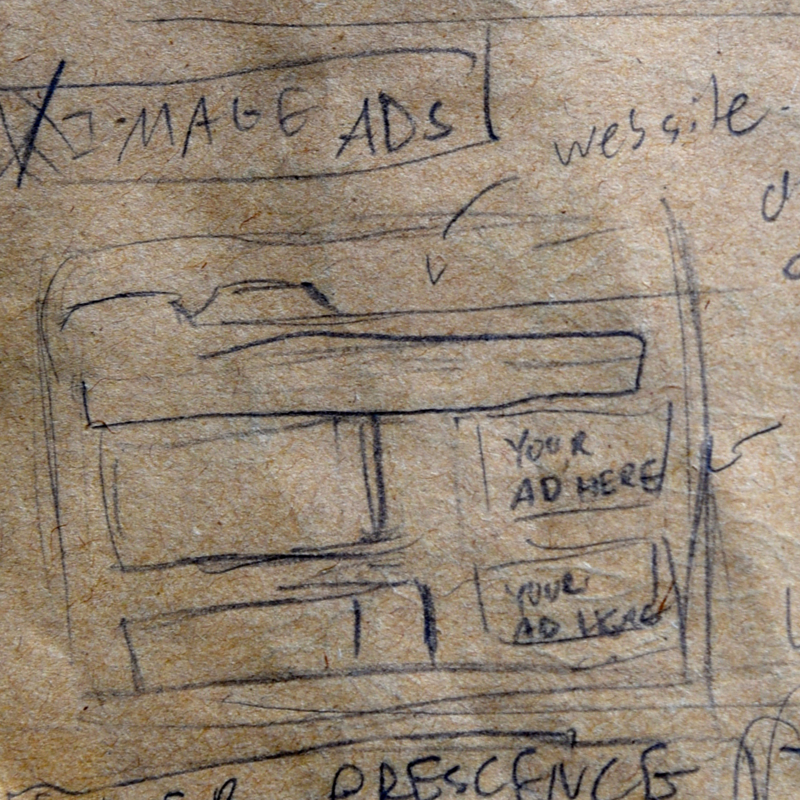

Over my 2017 summer internship at Cool Nerds Marketing, I was tasked to create moving icons for their website. The web designer found that viewers were not taking the time to read the different services, and needed a visual to both explain the different marketing concepts, as well as create an incentive for viewers to read the accompanying test.
This project required a lot of research, due to the fact I had to have a good understanding of the marketing concepts and terms the icons are meant to explain/show. This resulted in all icons going through at least 2 different iterations.

By the end of the project I had made 19 icons.